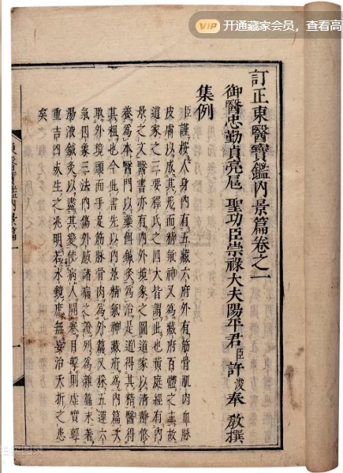

点击图片可查看大图 · 原始图像 435×600 px
成交
东医宝鉴二十三卷首二卷 朝鲜·许浚辑
许浚 · 日要享保九年大阪书林刻宽政十一年（1799）印本
成交记录RMB 8,800
估价RMB 8,000-12,000

点击图片可查看大图 · 原始图像 435×600 px
许浚 · 日要享保九年大阪书林刻宽政十一年（1799）印本
Catalogue note
Continue browsing